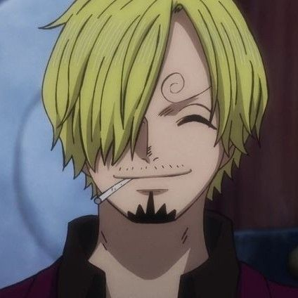
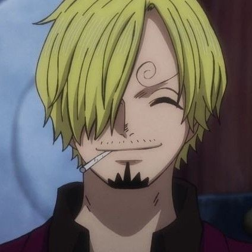

one piece
sinopsis
Veintidós años después de la muerte de Gol D. Roger, el legendario Rey de los Piratas, un enérgico joven con la habilidad de estirar las extremidades de su cuerpo como si fueran de goma llamado Monkey D. Luffy se embarca en un viaje para buscar el gran tesoro que Roger dejó antes de morir. Dicho tesoro, el llamado 'One Piece', ha sido buscado por una cantidad inimaginable de personas desde la muerte del Rey de los Piratas. Luffy, inspirado desde su infancia por el afamado pirata Shanks 'El Pelirrojo', comienza su aventura para encontrar el 'One Piece' y autoproclamarse como el nuevo Rey de los Piaratas. Así, este joven muchacho funda la banda de los Sombreros de Paja, con la que viaje por el mundo, encontrando en el camino a rivales y aliados por igual.

trailer
personajes principales
 
